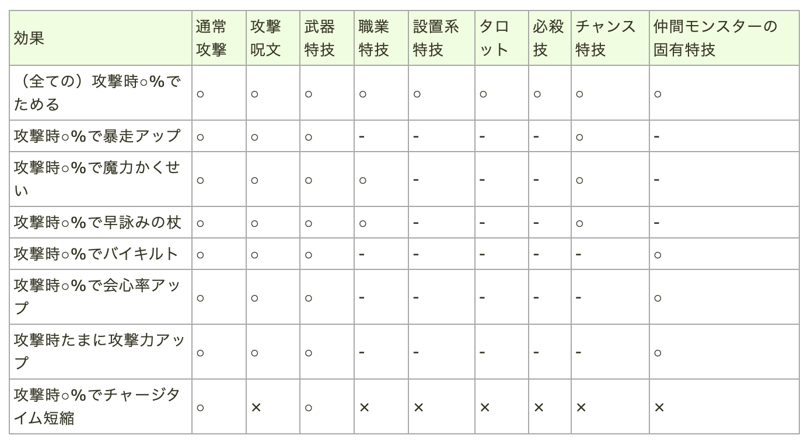

最終更新:
目次
バトル豆知識
- わたあめジャンプの効果は10秒.ジャンプしておけば次の1~2ターンは足元攻撃無効になる.
- ファランクス，アイギスの被ダメージ減少の効果は30秒．
- アイギスのビッグシールド，会心ガードの効果はそれぞれ180秒，120秒で，アイギスのCTはIIIで110秒だから，アイギスがループできるなら会心ガードとかビッグシールドは自動でループする．使わなくていい．
- ひっさつコマンドは90秒,残り30秒で表示が黄色になる.もし仮面に祈りつけてるならば，必殺チャージ時に祈りがかかる(効果時間2分)．なので，コマンドがある時間は祈りは消えない.コマンドが切れてから30秒で祈りが切れる．
- チャンスコマンドは45秒.一度使用すると300秒経過するか，死亡するまで再度チャージは発生しない．
- 敵のために立ち壁になることで，後衛タゲの攻撃時に敵の移動を妨害することができる．移動干渉．バフや敵によっても変わるが，大体14秒くらいで敵は移動をやめ，即死級のエンド攻撃を使ってくる(ターンエンド)
- 敵の反撃ゲージが溜まり切ってから(約10秒)，ターンエンドが発動する3秒くらいの間に後衛が敢えて敵に追い付かれることで，即死級のエンド攻撃を前衛が避けることができる．後衛タゲの攻撃→反撃行動という動きをする．後衛が殴られている間に前衛は避難準備をする．
- 反撃行動は行動AI行動回数にAI3回行動の場合，AI1→反撃行動→AI2→AI3→AI1とかいう流れになる．
- モードチェンジではAI行動回数はリセットされない．AI1→90%モードチェンジ→AI2といった感じ．
- モードチェンジによってAI数が変わる場合，AI2→AI3の場合，90%までAI1→90%到達→AI2→AI3と続く．AI2のときは，AI2→90%到達→AI1→AI2→AI3となる．
- モードチェンジ後のAI1はゲージを貯めずにすぐ発動する場合がある．だから，例えばAI2がキャンセルされてモードチェンジした場合，AI1→AI2(キャンセル)→AI3→AI4(AI1)→AI5(AI2)→AI6(AI3)といった，5回攻撃になる可能性がある．だから回復が忙しそうな時には殴らないほうがいいかも．回復が追いつかない時がある．
- 2~3秒硬直したり，一番近い人に振り向き範囲攻撃をしたり．タゲから離れるように歩いたり，CTCが起きたりしたときはAI1だと判断することができる．
- モンスターは次に行う行動まであらかじめ決めている(仮決定)
- 実際に選択された行動を本決定という
- そこで，仮決定していた攻撃対象が死んでいた，範囲に誰もいなかった，マホカンタされた，CTが溜まっていなかった．といった場合に，行動がキャンセルされ，(行動破棄)，異なる行動が選ばれる可能性がある．
- スコルパイドが後衛にですスコルピオを打とうとして歩き始めたけどCTが溜まっていなくて，急に紅蓮の熱波をうった．とか
- これがCTCのしくみ．CTは厳密にはチャージタイムじゃなくてクールタイムだけどまあチャージタイムキャンセルでいいかなといった感じだそう．
- CTを消費する行動を取った後のAI1でしか凶悪なCTCは発生しないから，AI3とAI1には特に注意．AI2やAI3でもCTCは発生することがある．それは固定ローテの時．メイヴ5であれば，ゲノムバース→どろはきと固定行動があるけど，どろはき→ゲノムバースときたときにまだどろはきのCTが溜まっていないから打てない．キャンセルして回転アタックとかすることある．厄介．
レアドロップについて
- モンスターが落とすアイテムには二種類ある．通常ドロップアイテム(通ドロ)とレアドロップアイテム(レアドロ)
- ウデ装備の錬金
- 輝石のベルトの輝石効果
- アクセ:おうじょのあいの合成効果
- アクセ:幸運のおまもりの合成効果
- ウデにレアドロップ率1.5倍が3つ付いている時，1.5×1.5×1.5の3.375倍ではなく，小数点以下を加算する.つまり,1.5+0.5+0.5で2.5倍となる．
- ウデ以外の装備にレアドロップ率?倍が付いている時も同じで，小数点以下を加算する．
・ウデ装備+3→3.3倍
- レアドロップ率1.5(+0.4倍)
- レアドロップ率1.5(+0.4倍)
- レアドロップ率1.5倍 ※パルプンテ効果なので，3つめは大成功不可能
- レアドロップ率1.1倍
- レアドロップ率1.1倍
- レアドロップ率1.1倍
- レアドロップ率1.1倍
- レアドロップ率1.1倍 ※ベルトはドロップ率のみ例外で，1.1倍が二個ついて最大値1.2倍となることがある．
-
基礎効果
- レアドロップ率1.1倍 合成効果
- レアドロップ率1.1倍
- レアドロップ率1.1倍
- レアドロップ率1.1倍
- モンスターごとにもレアドロップ率は決まっていて，例えばモーモン強のやわらかウールなら0.5%といわれている．
- レアドロ理論値の場合，これにかけて，0.5×4.2=2.1% となる．
- レアドロップ率はパーティメンバーの中で一番高い人の値が参照される．みんなで理論値装備して4の4乗で256倍になるとかはない..こんなんなったらやばいからね..
- ドロップ枠
- 盗賊の[盗み]枠
- 盗賊の[証]枠
- その他宝珠とか装備とかの枠
- だから一匹から最大3個ドロップする可能性がある．
- レアドロップ率?倍の影響を受けるのは1つめの[ドロップ枠]のみ
- 盗賊のきようさが高いほど2つめの盗みは成功しやすくなる．1000くらいあるとすごい．2024/11/11現在
武器装備の錬金効果，セット効果について
- version5.3で変更があった
- 通常攻撃(Aペチ)
- ダメージのある武器の特技全て
- 職業スキル(天下無双とか)
- 仲間モンスターの固有技
- 呪文
- タロット
- ひっさつ
- チャンスとくぎ
- ダメージのない武器特技
ただし，特殊なものもある...魔力覚醒は呪文でも発動したり..詳しくは↓↓ 
多段攻撃
- 多段攻撃では最初の1回目で攻撃時~の判定が行われる．
- はやぶさぎりとか．
- だけどそうでないものもある...↓↓
以下の特技は多段全てで状態異常判定がある
- ムチのAペチ
- ムチ特技(愛のムチ,スパークショット)
- ブメ特技(デュアルカッター,デュアルブレイカー)
武器のデバフ錬金効果
例:攻撃時4%でヘナトスが3つ付いた武器とか
- 個別に判定が行われる.
- 12ではなく,4%×3回,かつ同じ枠内で効果が発動するのは一度まで.
- 枠が違うと2回発動があり得る.基礎効果と錬金効果とか.他にも武器とウデとか.
- だからヘナトスとかは武器とかにヘナトス梅を装備するんじゃなくて，武器とウデに4%,4%とかで分けて装備できると強い.2回下げれるかも.
ベルトの錬金効果
種族特攻が乗らない攻撃がある．
- タロット(占い師......)
- 設置方攻撃,爆弾とか
- 設置方呪文,ジバ系とか
白箱について
- フィールドモンスターを倒した時に装備が入った白い宝箱を落とすことがある．この宝箱のことを白箱という．
- 盗む，盗賊の証とか関係なく，ドロップ率を変化させる手段はない．
- ドロップする装備はモンスターごとに決まっており，装備をドロップしないモンスターもいる．
- フィールド以外で戦った時もドロップすることがある(魔法の迷宮,その他)
- ドロップする装備のレベルによって確率が変わり，3~9%.レベルが低いほど落ちやすい．
- 装備が決定した後錬金効果の数が決定する．光っていた場合は必ず+3かつ埋め尽くしとなる．光る確率は5%．
- +3の確率は60%,+2の確率は40%
- その部位につく錬金効果から均等の確率で効果が選ばれる．パルプンテに関わらず均等.これが熱いところ．属性梅とかレアドロ埋めとかも狙える．
- 錬金効果の大成功の確率は10%,成功は30%で失敗は60%
- 大成功の場合でも，理論値は選ばれない．こうげき力6(+1),6(+2)とかについては均等の確率で選ばれる．
- この情報より，例えば雷ダメージ14%減が3つ付いた盾をドロップする確率は，縦のドロップ確率3%,光る確率5%,雷ダメージ減が選ばれる確率0.78%．よって，0.00117% となる．
- 光箱以外からドロップする確率は，0.0000008114839% となる．不可能...